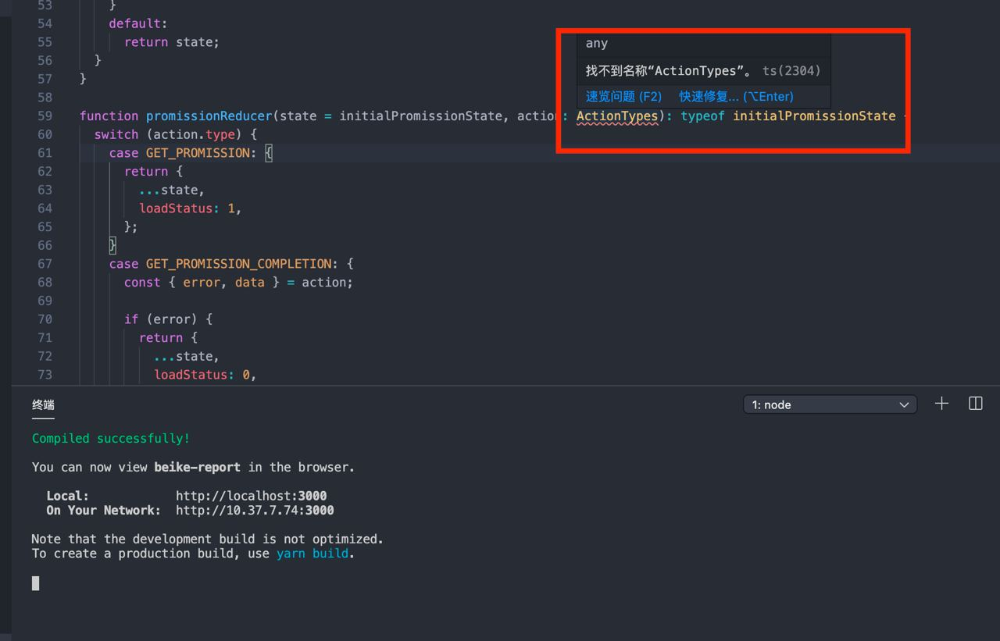
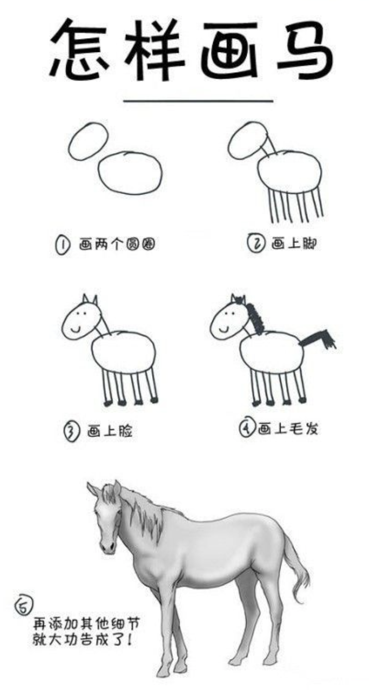

typescript 实践心得
先说下总结：
typescript 的静态检查能够规避很多错误，越用越香。
类型检查需要环环相扣，如果运用不当，将会成为如梗在喉般的存在
redux 的单一数据源思想与 typescript 十分搭配
1. 前言
几个月前我开始学习 typescript，并将其运用到项目中，这篇文章主要用来记录实战过程中一些心得，主要围绕 redux 状态与 typescript 来讲述
tips：在开发项目前，建议先查阅去相关库文档（比如：redux），可能会有一些关于 typescript 的教程
2. 项目搭建
使用cra搭建，因为开发进度紧急，没有多余的时间来研究webpack和babel配置（而且我相信cra做的肯定比我好）
3. connect 和 typescript
在 typescript 中，react.component需要定义props和state的类型，所以在使用connect的情况下，需要对传递的props进行类型定义
mapStateToProps为函数类型，mapDispatchToProps为对象类型，所以最好的办法是使用范型工具ReturnType和typeof
type PropsTypes = ReturnType<typeof mapStateToProps> & typeof mapDispatchToProps & { ... };
const mapStateToProps = function (state: RootTypes) { return state.app };
const mapDispatchToProps = { launch };
class App extends component<PropsTypes> { ... };
上面例子的RootTypes指redux中整个state的类型，下面就来介绍如何获取它
4. reducer 和 typescript
reducer作为纯函数，用ReturnType很简单就可以获得返回的类型
import { combineReducers } from "redux";
export function launch() {
return {
type: "LAUNCH",
};
}
export function launchCompletion(error: Error | undefined) {
return {
type: "LAUNCH_COMPLETION",
error,
};
}
const initialState: 0 | 1 | 2 = 0;
function appReducer(state = initialState, action): typeof initialState {
switch (action.type) {
case "LAUNCH": {
return 1;
}
case "LAUNCH_COMPLETION": {
if (action.error) {
return 0;
}
return 2;
}
default:
return state;
}
}
const rootReducer = combineReducers({ app: appReducer });
export type RootTypes = ReturnType<typeof rootReducer>;
export default rootReducer;
注意appReducer方法必须定义返回的类型，如下
function appReducer(state = initialState, action): typeof initialState { ... }
如何不定义，返回的类型将会是never!
上面的reducer虽然能返回正确的RootTypes，但action还没有定义，action的类型为any，这样RootTypes将毫无意义，因为case里可以随意修改返回的state，所以为action添加类型尤为重要
action creator为函数类型，所以只需要将action creator返回的类型导出，然后导入到reducer里，为action提供类型
...
export function launch() { ... }
export function launchCompletion() { ... }
const initialState: 0 | 1 | 2 = 0;
function appReducer(state = initialState, action): typeof initialState {
switch (action.type) {
case "LAUNCH": { ... }
case "LAUNCH_COMPLETION": {
const { error } = action as ReturnType<typeof launchCompletion>
...
}
default:
return state;
}
}
...
这样子可行，但如果case数量多起来，就需要导入多个类型，多次为action提供类型，偏麻烦。这里可以使用 typescript辨析联合类型的特性优化一下
export function launch() { ... }
export function launchCompletion(error: Error | undefined) { ... }
export function loadUserList(page: number, pageSize: number) { ... }
export function loadUserListCompletion(error: Error | undefined, data: {[key: string]: any}) { ... }
export type ActionTypes =
| ReturnType<typeof launch>
| ReturnType<typeof launchCompletion>
| ReturnType<typeof loadUserList>
| ReturnType<typeof loadUserListCompletion>
const initialState: 0 | 1 | 2 = 0;
function appReducer(state: = initialState, action: ActionTypes): typeof initialState {
switch (action.type) {
case "LAUNCH": { ... }
case "LAUNCH_COMPLETION": { ... }
case "LOAD_USER_LIST": { ... }
case "LOAD_USER_LIST_COMPLETION": { ... }
default:
return state;
}
}
只需要引入ActionTypes，并为action添加类型，typescript 会根据action.type推断出当前 action 的类型
5. saga 和 typescript
saga 需要进行类型定义的主要有两点
- 第一：请求完接口后返回的数据
- 第二：使用
select返回的state
接口返回的数据和格式是不可控的，如果对其进行类型定义将会花费大量精力，不可取，建议any带过。重点放在第二点上
select的返回总是any，即使selector定义了返回的类型，详细可以看：issues
比较好的解决方法主要有两种
- 第一种：将
selector拿出来，使用ReturnType为返回结果进行定义
const selector = (state: RootTypes) => state.app;
const app: ReturnType<typeof selector> = yield select(selector);
逻辑和最初一样，写法上绕了一下
- 第二种：利用
yield select()等同于getState()的特点，将select的返回作为传参传入selector中
const app = ((state: RootTypes) => state.app)(yield select())
写法简单，但与最初的逻辑有出入，比如进行测试时，需要传入整个 state
6. 全局变量
ActionTypes和RootTypes都是唯一的，只需要在全局定义这两个类型，就可以减少导入代码花费的时间
step 1. 确认tsconfig.json里的配置，把全局配置的.d.ts文件放在编译的范围内即可
step 2. 写入全局类型
//actions.js
...
export type ActionTypes =
| ReturnType<typeof launch>
| ReturnType<typeof launchCompletion>
| ReturnType<typeof loadUserList>
| ReturnType<typeof loadUserListCompletion>
//reducers.js
...
export type RootTypes = ReturnType<typeof rootReducer>;
export default rootReducer;
// global.d.ts
declare type RootTypes = import('reducers').RootTypes;
declare type ActionTypes = import('actions').ActionTypes;
step 3. 需要注意的点
第一，import 导入是在 typescript2.9 加入的，并且只能导入类型
第二，在添加全局类型后，有可能会出现编译器报错，而编译通过的问题(见下图)，重启 vscode 即可解决

7. 写在最后
最开始使用 typescript，新手上路，不知道如何使用范型，写了很多重复的类型定义，费时又费力。而且修改 redux 里的 state 定义，需要修改好几处的 props，是真的很难受，感觉很不值得
后面慢慢学会如何运用范型，结合 redux 单一数据源设计，数据至上而下传递，类型也可以随着数据至上而下传递，不用在各个地方定义类型，用更少的代码获得更多的类型定义，typescript 慢慢香了起来
typescript 是 javascript 的超集，语法上学习起来很简单，但要想有个好的体验和实践，没有想象中那么简单，就跟画马一样

希望这篇文章对你有所帮助，谢谢！